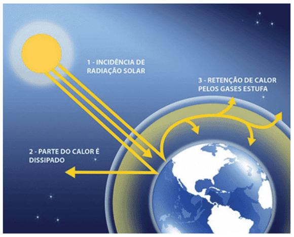
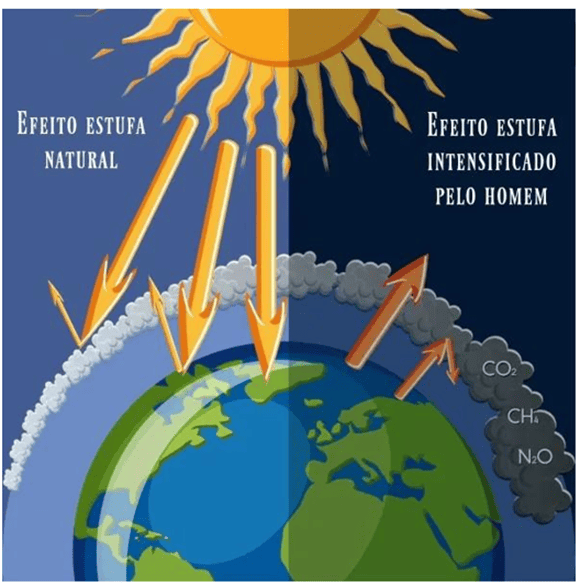
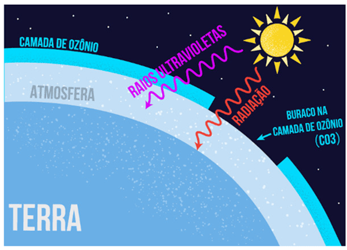
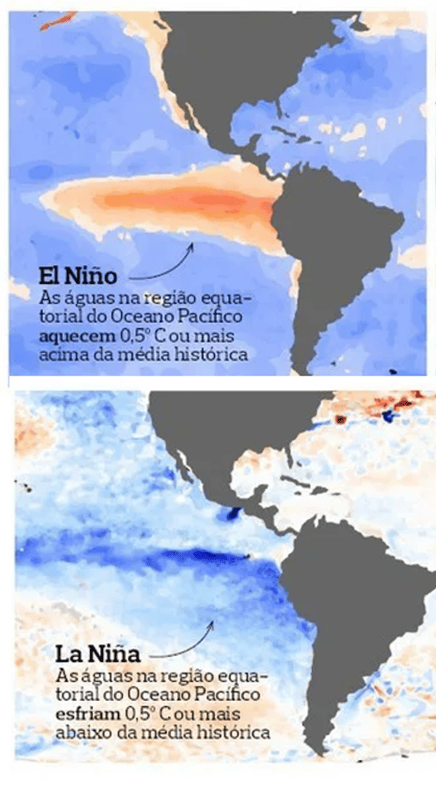

Conteúdo: Aquecimento global; El Niño; La Niña; camada de ozônio; efeito estufa.
Objetivo: Identificar as mudanças climáticas globais e entender os processos que as causam.
Destacar as possíveis consequências dessas mudanças para a vida humana e de outros seres vivos do planeta
Digite seu nome
Introdução
Na última aula aprendemos como o clima se
forma e quais fatores influenciam suas variações na Terra.
Agora, vamos avançar para entender como essas mudanças vêm afetando o planeta e o nosso dia a dia.
Nesta aula, estudaremos os principais fenômenos relacionados às
mudanças
climáticasglobais,
como o efeito estufa e o aquecimento global, e refletiremos sobre suas causas e consequências
para a vida na Terra.
Questões para serem respondidas no caderno sobre o tema da aula de hoje:
1. O que é o efeito estufa e por que ele é importante para a vida na Terra?
2. Por que o efeito estufa pode se tornar um problema ambiental?
3. Quais são as principais causas do aquecimento global?
4. Quais são as consequências do aquecimento global para o planeta?
5. O que é o fenômeno El Niño e como ele afeta o clima do Brasil?
6. Em que o fenômeno La Niña é diferente do El Niño?
7. De que forma El Niño e La Niña influenciam a agricultura e o abastecimento de água?
8. O que é a camada de ozônio e qual a sua função?
9. Quais substâncias destroem a camada de ozônio e em quais produtos elas aparecem?
10. Como o estudo desses fenômenos — efeito estufa, aquecimento global, El Niño, La Niña e camada de
ozônio — ajuda a compreender o futuro do planeta?
1. O Efeito Estufa

Antes de começarmos a aula, imagine só: se a Terra não tivesse atmosfera, o planeta seria congelado,
com temperaturas médias de aproximadamente –18 °C.
A atmosfera é uma coberta invisível que protege e aquece a Terra.
Graças a um fenômeno natural chamado efeito
estufa
,
parte do calor proveniente do Sol fica retida na atmosfera, mantendo a Terra em torno de
+15 °C — temperatura ideal para a existência da vida.
Esse processo foi descrito pela primeira vez em 1827 pelo cientista francês
Jean Baptiste Fourier, que comparou a atmosfera a uma estufa de vidro.
Mais tarde, em 1860, o físico John Tyndall demonstrou que gases como
o dióxido de carbono (CO₂) e o vapor d’água têm a capacidade de reter calor.
Ele também observou que mudanças na quantidade desses gases poderiam alterar o clima do planeta.
Como o efeito estufa funciona?
A radiação solar aquece a superfície da Terra, que devolve parte desse calor em forma de radiação
infravermelha. Alguns gases presentes na atmosfera absorvem parte dessa energia e a reemitem,
impedindo que todo o calor escape para o espaço. Esse processo mantém o planeta aquecido.
Principais gases
do efeito estufa dióxido de carbono (CO₂), metano (CH₄),
óxido nitroso (N₂O), vapor d’água (H₂O) e gases industriais (HFC, PFC, SF₆).
O efeito estufa, portanto, é um fenômeno natural e essencial.
Sem ele, o planeta seria frio e inóspito.
O problema surge quando há um aumento excessivo desses gases na atmosfera,
o que intensifica o aquecimento do planeta e gera o fenômeno conhecido como
aquecimento global.
2. O Aquecimento Global

O aquecimento
global é o possui estreita relação com os gases liberados pelas atividades humanas.
Esse processo intensificou-se a partir da Revolução Industrial,
com a queima de combustíveis fósseis — como carvão, petróleo e gás natural —
e com o desmatamento, que libera dióxido de carbono (CO₂) e reduz a absorção desse gás pelas florestas.
Desde o século XIX: a concentração de CO₂ aumentou de 280 ppm para mais de 400 ppm.
O metano (CH₄) e o óxido nitroso (N₂O) também apresentaram crescimento significativo.
Consequências do aquecimento global
Elevação da temperatura média global;
Derretimento de geleiras e aumento do nível dos oceanos;
Mudanças no regime de chuvas e impactos na agricultura;
Ocorrência de secas, ondas de calor e tempestades mais intensas;
Risco de extinção de espécies e desequilíbrio dos ecossistemas.
Embora o clima da Terra tenha mudado naturalmente ao longo da história,
a velocidade atual dessas transformações é muito superior ao que se observava em períodos anteriores.
De acordo com o
IPCC
,
a temperatura média global aumentou cerca de 0,74 °C nos últimos 100 anos.
Importante: Se não houver redução na emissão desses gases,
a temperatura global poderá subir de 1,5 °C a 2 °C até o final do século,
provocando alterações irreversíveis no clima e nos biomas terrestres.
Agora que compreendemos o funcionamento do efeito estufa e as causas do aquecimento global,
o próximo passo é estudar outro elemento essencial da atmosfera:
a camada de ozônio.
3. Camada de Ozônio

No alto da atmosfera existe uma camada muito especial chamada camada
de ozônio, formada por moléculas
de ozônio (O₃).
Sua principal função é proteger a vida na Terra, filtrando a radiação
ultravioleta emitida
pelo
Sol.
Sem essa proteção, haveria aumento de queimaduras, câncer de pele, catarata, envelhecimento precoce e
danos
à vegetação,
que teria a fotossíntese reduzida.
Contudo, essa camada tem sofrido agressões. As substâncias que mais a destroem são os
CFCs,
presentes em antigos sistemas de refrigeração e sprays.
Ao chegarem à estratosfera, liberam cloro, que reage com o ozônio — um único átomo de cloro pode
destruir
até
100 mil moléculas de ozônio.
Outras substâncias também prejudicam a camada, como os halons (extintores),
o tetracloreto de carbono (solventes), o metil clorofórmio (usado em anestésicos) e os
óxidos de nitrogênio (indústria química).
Desde a década de 1960, cientistas vêm observando a redução gradual do ozônio atmosférico.
O chamado “buraco na camada de ozônio” aparece com mais intensidade sobre a Antártida,
onde o frio extremo e reações químicas aumentam a destruição do ozônio.
Felizmente, em boa parte do Brasil, essa camada ainda se mantém preservada em cerca de 95%.
4. El Niño e La Niña

Além da camada de ozônio, outros fenômenos também influenciam o clima da Terra.
Entre os mais conhecidos estão o El Niño e a La Niña, que ocorrem no
Oceano Pacífico e afetam o clima de várias partes do mundo.
O El
Niño é caracterizado pelo aquecimento anormal das águas superficiais do Pacífico
Tropical,
alterando os ventos e os padrões de chuva.
No Brasil, costuma provocar aumento das temperaturas e diminuição das chuvas nas regiões Sudeste,
Centro-Oeste e Nordeste, enquanto o Sul tende a registrar precipitações mais intensas.
Já a
La
Niña apresenta o fenômeno oposto — o resfriamento anormal das águas do Pacífico
Tropical.
Nesse período, é comum o aumento das chuvas nas regiões Norte e Nordeste,
enquanto o Sul enfrenta estiagens e temperaturas mais baixas.
Esses fenômenos impactam diretamente setores como a agricultura e a geração de energia,
pois alteram o regime de chuvas e a disponibilidade de água.
O aquecimento global pode potencializar seus efeitos, tornando eventos extremos como secas,
inundações e ondas de calor mais frequentes.
Não existe pergunta boba! A Ciência é feita de perguntas!
P:Por que a camada de ozônio é tão importante para a vida na Terra?
R:
Porque ela atua como um escudo que bloqueia a radiação ultravioleta emitida pelo Sol.
Sem essa proteção, haveria aumento de doenças de pele, catarata e danos às plantas,
o que afetaria toda a cadeia alimentar e o equilíbrio da vida no planeta.
P:O que causou o buraco na camada de ozônio?
R:
O buraco surgiu por causa da liberação de substâncias químicas como os CFCs,
usados em antigos refrigeradores e sprays. Quando chegam à estratosfera,
essas substâncias liberam cloro, que destrói as moléculas de ozônio.
Esse processo foi mais intenso sobre a Antártida, onde as condições climáticas favorecem a
reação.
P:Qual a diferença entre El Niño e La Niña e como eles afetam o clima do Brasil?
R:
O El Niño é o aquecimento anormal das águas do Oceano Pacífico,
que geralmente provoca temperaturas mais altas e seca em boa parte do Brasil,
enquanto a La Niña é o resfriamento dessas águas, causando aumento das chuvas
no Norte e Nordeste e estiagem no Sul. Ambos influenciam diretamente
a agricultura, o abastecimento de água e a geração de energia.